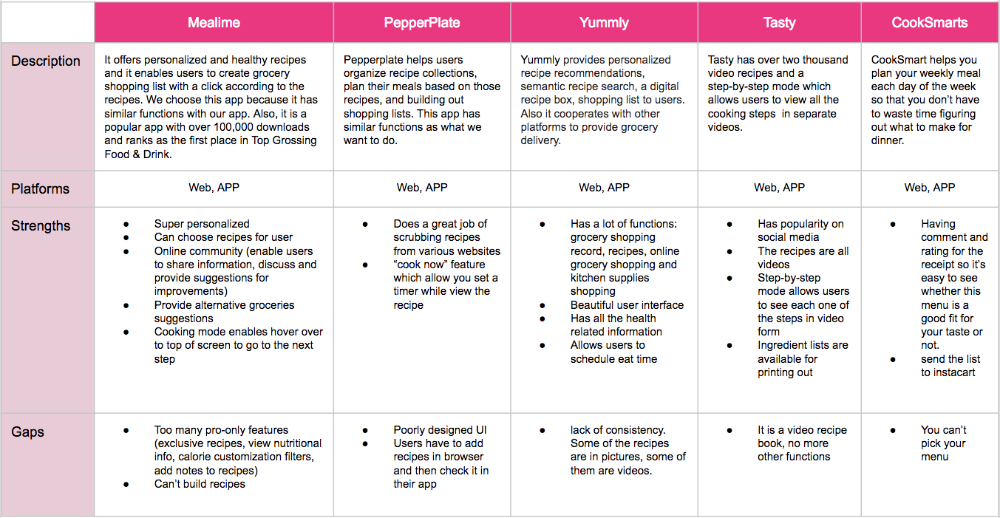

Comparative Analysis

We researched several apps(cooking, meal planning) that have similar concepts like ours. Most of them includes various recipes database which give user a wide range of choices. Several apps have video cooking instructions. There are also some inspiring ideas incorporated into the apps such as using gesture to go to the next page, enable set timer on cooking steps page and send the grocery list to instacart.
However, none of the apps that we researched is perfect. We are going to make our app more easy to use and avoid the common mistakes that happened.
Gather and Analysis Data
- Interview Goals
- Identify common obstacles
- Learn process for meal planning
- Learn common practices and metaphors
We interviewed 13 people in total, including students and families. The interviews are conducted in user's home and also in HEB supermarket. Our participants have a range of cooking skills from low to high. For people who don’t cook a lot and have low cooking skills, we want to know what stopped them from cooking and how can we improve our app to make cooking more easy. For people with medium and advanced cooking skills, we want to know how they prepare the meals and how we can help them in the cooking routine. We want to gather enough information in the contextual interview and to help us understand the users. We are able to make the following summary after the interviews:
- Most people purchase ingredients at grocery store once a week
- Get recipes online and save them on phone
- Most people love to try new recipes
- Families plan their meals more carefully than individuals who eat alone
- People repeat the meal during the week
- Busy people cook big meals for the next couple meals
- During cooking, if forget the steps need to look at the recipe again
- Don’t care about calories in cooking
- Only buy things that can keep for a long time online
After conducting in-person interviews we ran an online questionnaire to identify potential areas of interested in users. For the most part, the results were predictable: users were very interested in having an application that allows searching for recipes.
Personas and Storyboard
Based on the interview result, we are targeting two types of users: people who eat alone and have a low cooking skill; people who have a high cooking skill and cook for the entire family. We created the storyboard based on the persona of Alessia. We presented Alessia’s problems of having to make a long paper list for grocery shopping, missing grocery items time to time and making meal plans. After Alessia got Chewy in the app store, she found it pleasing to use it because it helps her plan the meals, do grocery shopping and explore new recipes to impress her children.
Ideation
After defining the main functions, we start to sketch out low fidelity prototypes which are quick and easy for modifications. Through design low fidelity prototypes, we can determine more specifically about how our app should look like and how our app should be organized.
We agreed on having a homepage to show the main features to our users. Specifically, we decide to have fridge, meal plan and recipes in the homepage, because that’s what we want our users to see each time they open our app. We decide to use bar shape and color to show the freshness of ingredients in the fridge.
A meal plan which allow our users to plan meals ahead would be useful to people who cook a lot, like a homemaker. So we include a meal plan page to enable users to plan and check their meals for a week. When our users find an interesting recipe during browse or they think the recipes recommended to them are good, they can also add it to a specific day on a calendar.
Low-fidelity prototypes
Mid-fidelity prototypes